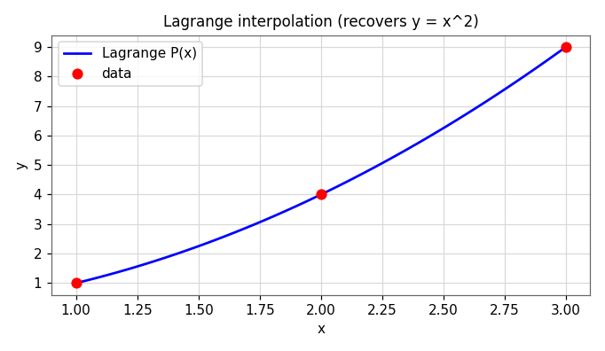
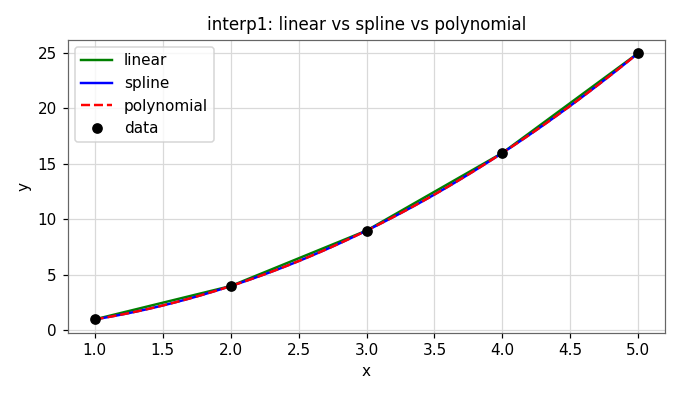

Interpolation & Polynomial Approximation
Apply interpolation methods and polynomial approximation. Here the curve must pass through every data point. We build interpolating polynomials (Lagrange, Newton), see why high degree is dangerous, and switch to piecewise splines.
Interpolation vs. extrapolation
Interpolation estimates values between known data points; extrapolation estimates outside the data range. Unlike least-squares fitting (Module 3), interpolation assumes the data is exact and requires the curve to pass through every point.
4.1 Polynomial interpolation
Through any \(n\) data points with distinct \(x\)-values, there is exactly one polynomial of degree at most \(n-1\) that passes through all of them. Two points define a unique line; three points a unique parabola; and so on.
You could find the coefficients by solving a linear system (a Vandermonde system), but that matrix is often ill-conditioned. The Lagrange and Newton forms construct the same unique polynomial more reliably.
4.2 Lagrange interpolating polynomials
The Lagrange form writes the interpolant as a weighted sum of the data values:
Each basis polynomial \(L_i(x)\) is cleverly built to equal \(1\) at its own node \(x_i\) and \(0\) at every other node. So at \(x=x_k\) only the \(k\)-th term survives and \(P(x_k)=y_k\) — the curve hits every point by construction.
Worked example
Interpolate the three points \((1,1),(2,4),(3,9)\):
As expected, the unique degree-2 polynomial through those points is \(y=x^2\).

Source: Interpolation lecture (Lagrange code lab).
4.3 Newton's divided-difference form
Newton's form builds the same polynomial incrementally, which makes it cheap to add a new data point without recomputing everything:
The coefficients \(b_k\) are divided differences, computed from a triangular table:
Lagrange and Newton give identical polynomials — they are just two ways to write the unique interpolant. Newton is preferred when points arrive one at a time; Lagrange is conceptually cleaner.
4.4 The danger of high-degree interpolation
It is tempting to fit many points with one high-degree polynomial. But high-degree interpolants oscillate wildly between equally spaced points — especially near the ends of the interval. This is Runge's phenomenon, classically shown with
As you add equally spaced nodes, the interpolating polynomial fits the nodes exactly yet swings further and further from \(f\) between them. The demo below lets you watch this happen.
🎛 Demo: interpolation methods & Runge's phenomenon
Click to add points, or load the Runge preset and increase the node count. Compare the single high-degree Lagrange polynomial against a piecewise-linear interpolant and a cubic spline.
4.5 Piecewise & spline interpolation
Instead of one global polynomial, a spline joins many low-degree polynomials, one per interval between data points.
- Linear spline: connect adjacent points with straight segments. Simple, but kinked (the slope jumps at each node).
- Cubic spline: a separate cubic on each interval, chosen so the pieces meet smoothly — matching value, first derivative, and second derivative at every interior node. The result is smooth and avoids Runge oscillation.
4.6 MATLAB's built-in interpolation
MATLAB ships fast, robust interpolation functions — you rarely write your own in practice:

interp1(...,'spline') for smooth interpolation of a data table, and 'linear' when you just need quick in-between values. Reserve a single high-degree polynomial for a small number of points.Source: Interpolation & Functional Approximation lectures.
Self-check · CLO-4
Five questions on interpolation.